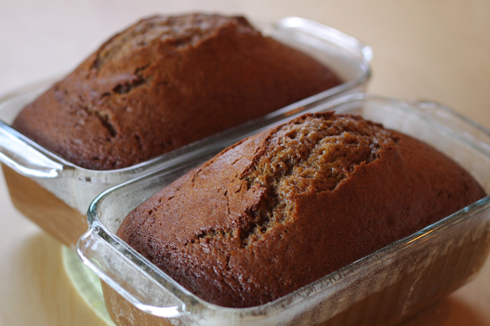

Get ready for the fall with warm pumpkiny bread!
- 2 cups all-purpose flour
- 1 teaspoon salt
- 1 teaspoon baking soda
- 1 teaspoon baking powder
- 1 teaspoon ground cloves
- 1 teaspoon ground cinnamon
- 1 teaspoon ground nutmeg
- ¾ cup unsalted butter, softened
- 1 cup sugar
- 2 large eggs
- 1 15-oz can 100% pure pumpkin
- Preheat oven to 325°F
- Grease two 8 x 4-inch loaf pans and dust with flour
- In medium bowl, combine flour, salt, baking soda,
baking powder, cloves, cinnamon, and nutmeg.
Whisk until well combined; set aside.
- In a large bowl, beat the butter and
sugar on medium speed until just blended.
- Add eggs one at a time, beating after each.
- Continue beating for a few minutes until very light and fluffy
- Beat in the pumpkin
- Add in flour mixture and combine.
- Divide batter into prepared pans.
- Bake for 65-75 minutes and allow to cool before slicing!